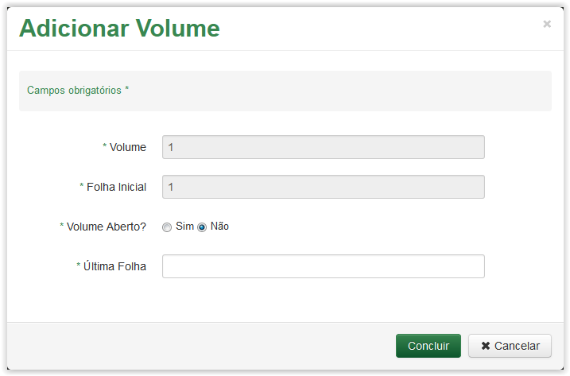
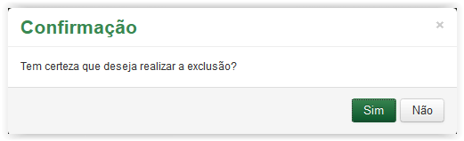

Cadastrar Processo
Após preencher a aba Dados Gerais e clicar no botão Próxima, o sistema apresenta a aba Volumes:
Cadastrar Processo - Aba Volumes
Clique no ícone  para Adicionar um Volume:
para Adicionar um Volume:
Clicando no ícone para adicionar um volume
A tela Adicionar Volume será apresentada:

Adicionar Volume
Informações para adicionar volume:
Volume: |
Identificação do volume do processo. |
Folha Inicial: |
Número da folha que se inicia o volume. |
Volume Aberto: |
Referente a quantidade de volumes que o processo possui, podendo ou não estar aberto. |
Última Folha: |
Caso o volume já tenha sido encerrado deve ser inserido o número da última folha daquele volume. |
 Preenchendo a tela Adicionar Volume!!
Preenchendo a tela Adicionar Volume!!
Tela Adicionar Volume - campo Volume Aberto selecionado como Sim
Tela Adicionar Volume - campo Volume Aberto selecionado como Não
Tela Adicionar Volume preenchida
 , se desistir de adicionar o volume, ou clique no botão
, se desistir de adicionar o volume, ou clique no botão  para finalizar o cadastro do volume. o sistema apresenta a mensagem de sucesso abaixo:
para finalizar o cadastro do volume. o sistema apresenta a mensagem de sucesso abaixo: o sistema retorna para a Lista de Volumes.
o sistema retorna para a Lista de Volumes.Os volumes cadastrados são apresentados na Lista de Volumes:
Cadastro de Processo - Aba Volumes - Lista de Volumes
Se desejar excluir algum volume, clique no ícone  :
:
Clicando no ícone para excluir o volume
Uma mensagem de confirmação é apresentada:

Mensagem de confirmação
Se não desejar excluir o volume, clique no botão  . Caso contrário, clique no botão .
. Caso contrário, clique no botão .
Ao confirmar a exclusão o sistema retira o volume da Lista de Volumes.
Created with the Personal Edition of HelpNDoc: Easy to use tool to create HTML Help files and Help web sites